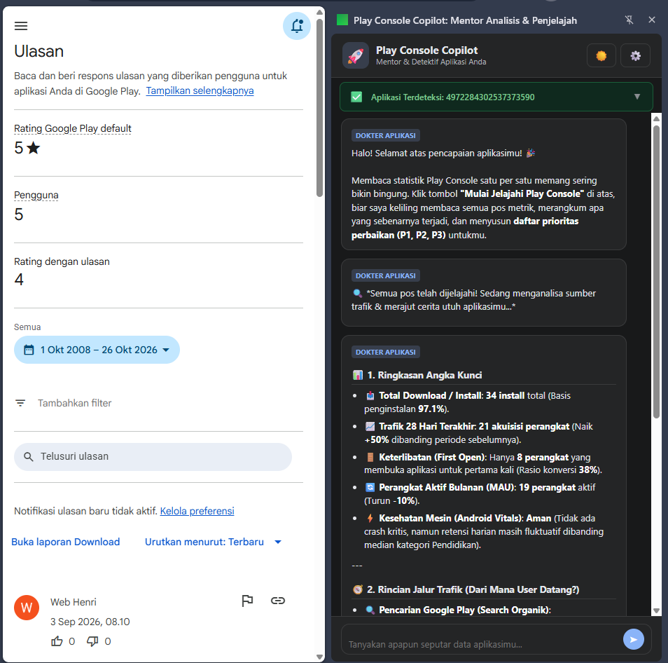

Ekstensi Chrome berbasis AI yang otomatis berkeliling menjelajahi jeroan Play Console aplikasimu. Mengurai sumber trafik unduhan, mendiagnosa penyebab kebocoran uninstall, dan merangkum rencana aksi berprioritas (P1, P2, P3).

Kamu sudah capek-capek rilis aplikasi, tapi membaca statistik bawaannya seperti masuk labirin.
Harus klik Dashboard, Store Performance, Android Vitals, Statistics, dan Ulasan manual hanya untuk mengira-ngira apa yang sedang terjadi.
Screenshot grafik satu demi satu lalu nanya ke ChatGPT atau Gemini extension sangat memakan waktu dan melelahkan.
Cukup 1 klik "Mulai Jelajahi". Ekstensi langsung berkeliling, menghubungkan data antar menu, dan memberikan diagnosa konkret.
Bukan sekadar penampil angka, melainkan "Dokter Aplikasi" yang memberi tahu akar masalah dan solusinya.
Ekstensi otomatis mampir ke Lapak Toko, Kondisi Mesin (Crash & ANR), Retensi Pengguna, dan Ulasan secara sekuensial.
Ketahui persis berapa orang yang mendownload dari pencarian Play Store (lengkap dengan kata kunci apa yang mereka ketik), rekomendasi explore, atau referal luar.
Tidak ada lagi paragraf esai yang panjang dan melelahkan. Semua disajikan dalam format poin-poin ringkas dengan angka tebal yang bisa dipahami dalam 3 detik.
Langsung tahu apa yang harus kamu perbaiki hari ini (P1: Kritis/Cegah Uninstall, P2: Pertumbuhan/Optimasi ASO, P3: Penyempurnaan santai).
Bebas gunakan provider pilihanmu: FreeLLMAPI (routing model auto), OpenAI-compatible endpoint, atau Google Gemini resmi gratis.
Dukungan tema gelap bawaan yang elegan dan nyaman di mata saat kamu mengecek performa aplikasi di malam hari.
Tanpa perlu lewat Chrome Web Store, bisa langsung dipasang sekarang juga.
Klik tombol download di bawah untuk mendapatkan file play-console-copilot-v1.0.0.zip, lalu ekstrak ke salah satu folder di komputermu.
Buka browser Chrome, ketik di URL bar: chrome://extensions/ lalu tekan Enter. Di pojok kanan atas, nyalakan toggle Developer mode.
Klik tombol Load unpacked di pojok kiri atas browser, lalu pilih folder hasil ekstrak tadi. Selesai! Ikon ekstensi akan langsung muncul.
Terpasang di Chrome 🎉Buka Play Console, klik ikon ekstensi lalu ikon ⚙️ (Pengaturan). Masukkan Google Gemini API Key gratis dari Google AI Studio. Siap pakai!
100% Siap Audit 🚀Ya, 100% gratis dan open-source di bawah lisensi MIT. Kamu bebas menggunakan, memodifikasi, atau membagikannya ke teman-temanmu.
Sangat aman. Ekstensi ini berjalan langsung di browser komputermu (client-side) dan tidak memiliki server perantara (middleman). Data halaman Play Console hanya dikirim langsung ke penyedia AI yang kamu atur sendiri (misal proxy FreeLLMAPI lokal atau Google Gemini).
Pesan ini biasanya muncul jika Base URL di Pengaturan ⚙️ masih mengarah ke http://127.0.0.1:31415 (server lokal FreeLLMAPI) padahal komputermu tidak menjalankan aplikasi server tersebut. Cukup klik ⚙️ (Pengaturan), pilih preset Google Gemini, lalu masukkan API Key Google Gemini gratis dari Google AI Studio!
Kunjungi Google AI Studio API Keys, login dengan akun Google-mu, klik Create API key, lalu salin dan tempel ke menu Pengaturan ekstensi.